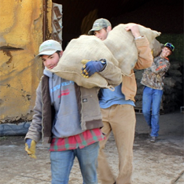

Preston Idaho
Weather Summary
Currently: Sunny
Temperature: 76° F
Humidity: 69%
Precipitation: 0 inches
Wind Speed: 5 mph
Wind Chill:
5 Day Forecast
| Mon | Tue | Wed | Thu | Fri |
70 |
72 |
71 |
70 |
68 |

Freezing temps end the harvest for most crops/gardens
When Wes Beutler heard that the weather was forecasted to drop below 20 degrees last week, he started harvesting his potato crop 24/7, as fast as he and his crew could.
Potatoes can handle some freezing temperatures, but not below 20 degrees, he said. A cold front brought rain and snow to Franklin County and nighttime temperatures as low as 14 degrees. Beutler grows potatoes on 640 acres in the Dayton area. Before the storm, he had about 50 percent harvested.

Weather Works
82 S State St,
Preston, ID 83263
contact@weatherworks.net